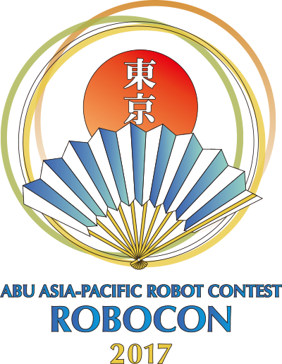

The Robo-Tech Forum is currently the only technical forum in GCOEA working for the enhancement of technical skills in robotics and automation. It was established with a vision to empower the students with practical knowledge of engineering principles and represent the college at various national level techfests which would help the students in improving their technical know-how and problem solving attitude.
History Of RTF
The Robo-Tech Forum was formed in September, 2013 when seven students from four different branches took the initiative. The forum is guided by Prof. P.L. Paikrao, Department of Electronics and Telecommunication Engineering and various professors from seven different branches
It has a student representative to manage all administrative activities and communicate with the authorities.
The forum encourages students from different branches to come and work together in the field of robotics which encourages a learning environment from peers. In the past, many students have served as members and Student Coordinators for the forum.
Activities
The Forum engages in various activities as listed below:
Forming teams to represent GCOEA at various national levels events like Techfest (IIT Bombay), Axis (VNIT) etc.
Participation in ABU Robocon (an international level robotics competition organized jointly by Doordarshan and MIT, Alandi).
About ABU Robocon
The ABU ROBOCON is an Asian Oceanic Institute Robotic competition, founded in 2002 by Asia-Pacific Broadcasting Union. In this competition robots compete to complete a task within a set period of time according to a given theme. The contest aims to create friendship among young people with similar interests who will lead their countries in the 21st century, as well as help advanced engineering and broadcasting technologies in the region. The event is broadcasted in many countries through ABU member broadcasters.
Every year the competition has a theme upon which the problem statement is based. This tests the designing and problem solving attitude of engineering students against the given problem statement.
Benifits
The members of the forum gain an insight in application of theoretical principles in real life to solve problems. Apart from this, the most important aspect is that students gain inter-disciplinary knowledge i.e. useful knowledge or concepts from other branches which improves overall understanding of the solution, which cannot be provided via classroom teaching.
The wide range of components used, be they mechanical or electronic and the software involved in control of the robot, makes the students much more aware of how the engineering world works than any previous experience.
Providing guidance to students in minor and major projects, Avishkar (conducted by SGBAU) etc.
Conducting workshops on industry oriented software such as CATIA, PTC Creo, and MATLAB etc.
Apart from this the forum encourages its members to participate in various other activities and personal projects.